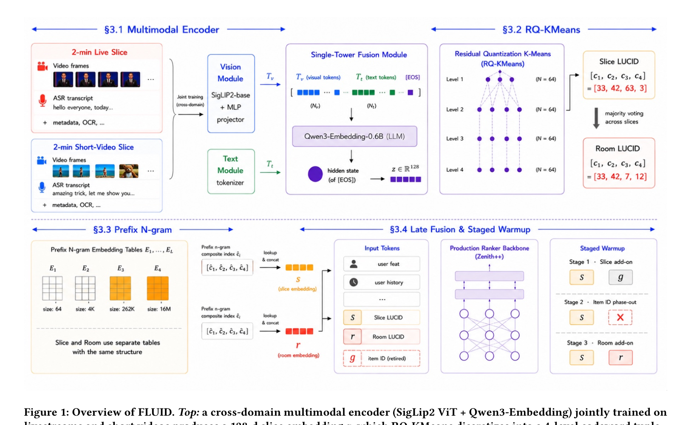
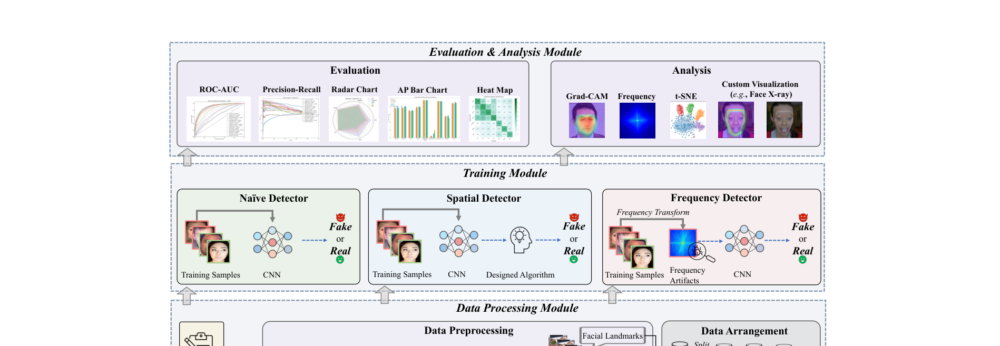
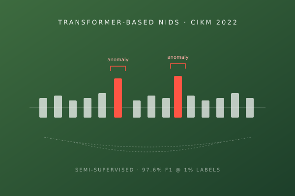

TikTok
Jul. 2025 – Present
Machine Learning Engineer · Recommendation Systems, TikTok Live
Multimodal ranking, pre-ranking architecture, training & serving efficiency. Best New Hire award.
Rose (Xinhang) Yuan
Machine Learning Engineer · Bay Area
Hi there 👋 I'm Rose. I'm a Machine Learning Engineer at TikTok, working on large-scale ranking and recommendation systems for TikTok Live.
My current work focuses on multimodal content understanding, pre-ranking model architecture (User-Graph decoupled, Causal Attention + SparseMoE), and training/serving efficiency at production scale. I was honored to receive the Best New Hire award and a promotion in my first year.
Before TikTok, I received my M.S. in Computer Science from Washington University in St. Louis and my B.E. from Tongji University. I've published first-author work at CIKM and contributed to NeurIPS as part of the CUHK-Shenzhen Deepfake research team, with recent first-author work under review at RecSys 2026.
Always happy to chat about ranking systems, multimodal ML, or the craft of shipping research into production — feel free to reach out.
News
2026
Released our work FLUID: From Ephemeral IDs to Multimodal Semantic Codes on arXiv — first-author paper from my TikTok Live team. Under review at RecSys 2026.
May 2026
Promoted at TikTok after a year on the Live Recommendation team — beyond grateful for my mentor, tech lead, and the whole team 🎉
Mar 2026
2025
Honored to receive the Best New Hire award at TikTok 🎉
Dec 2025
Joined TikTok as a Machine Learning Engineer on the TikTok Live recommendation team!
Jul 2025
Graduated from Washington University in St. Louis with an M.S. in Computer Science 💙
May 2025
2023
DeepfakeBench: A Comprehensive Benchmark of Deepfake Detection accepted to NeurIPS 2023!
Sep 2023
Started my M.S. at Washington University in St. Louis. 🎓
Aug 2023
2022
First-author paper An Extreme Semi-Supervised Framework Based on Transformer for NIDS accepted to CIKM 2022.
Aug 2022
Experience
Education
Publications

FLUID: From Ephemeral IDs to Multimodal Semantic Codes for Industrial-Scale Livestreaming Recommendation
Under review · RecSys 2026 · arXiv:2605.21832
FLUID is the first framework to fully retire the candidate-side item ID from a production-scale livestreaming ranker. We couple a cross-domain multimodal encoder — jointly trained on short videos and livestreams — that produces discrete hierarchical codes (LUCID), with a late-fusion, ID-free design that injects slice-level and room-level LUCID as independent tokens, stabilized by a staged warmup under online incremental training. Deployed on TikTok's industrial livestreaming recommenders.

DeepfakeBench: A Comprehensive Benchmark of Deepfake Detection
NeurIPS 2023
A large-scale benchmarking framework for deepfake detection: automated data pipelines, integration of multiple detection models, and standardized evaluation across diverse datasets — addressing inconsistencies in detection methodologies at scale.

An Extreme Semi-Supervised Framework Based on Transformer for Network Intrusion Detection
CIKM 2022
The first application of Transformer architectures to network intrusion detection. A semi-supervised learning pipeline that identifies network anomalies, achieving 97.6% F1 accuracy with only 1% labeled data.
Co-authored Publications
ACM MM 2025
CPAL 2026
CPAL 2026
Enhancing Low-Cost Video Editing with Lightweight Adaptors and Temporal-Aware Inversion
Y. He, S. Li, …, X. Yuan (6/14), et al. · Proceedings Poster · arXiv · OpenReview
ICLR 2026
Enhancing Code LLMs with Reinforcement Learning in Code Generation: A Survey
J. Wang, Z. Zhang, …, X. Yuan (13/21), et al. · Workshop on LLM Reasoning · arXiv · OpenReview
WWW 2026
SCORE: Story Coherence and Retrieval Enhancement for AI Narratives
Q. Yi, Y. He, …, X. Yuan (7/20), et al. · LARS Workshop · arXiv · OpenReview
Selected Projects
Web3 Multi-Agent Automation — Autonomous Browser & DeFi Operations
2025
Exploratory project
A multi-agent system combining LangChain, Playwright, and Vision-Language Models for autonomous Web3 task execution. Agents perform real-time browser vision analysis (Twitter, Discord, DEX UIs), coordinated through a WebSocket-based controller with a SpringBoot back-end. End-to-end autonomous DeFi trading on PancakeSwap — no scripts, no manual input required.
🎬 Demo video (published on Tearline channel)
Guzheng AI — An AI-Powered Learning App for Traditional Chinese Music
2021 – 2022
Undergraduate project, Tongji University
An audio-analysis pipeline that gives real-time pedagogical feedback to students learning guzheng, a traditional Chinese string instrument. The system listens to a student's playing, detects deviations in pitch, rhythm, and articulation against canonical performances, and suggests targeted exercises — lowering the barrier for self-learners without access to a private teacher.
🥈 Silver Prize, "Internet+" Shanghai Innovation & Entrepreneurship Contest ·
🥈 2nd Prize, Shanghai University Cultural Creative Contest ·
📜 Registered Software Copyright (China)
Honors & Awards
Promotion, TikTok Live Recommendation
Mar. 2026
Best New Hire, TikTok Recommendation Systems
Dec. 2025
M.S. completed at Washington University in St. Louis, GPA 3.70/4.00
May. 2025
Dean's Select Fellowship, Washington University in St. Louis (Department of Computer Science)
Nov. 2023
Outstanding Graduate · Class rank 1/54, Tongji University
Jul. 2023
B.E. completed at Tongji University
Jul. 2023
First-Class Scholarship (×2), Tongji University
2021 & 2022
1st Prize, Shanghai Computer Application Contest
2022
Honorable Mention, MCM/ICM (Mathematical Contest in Modeling)
Feb. 2022
1st Prize (National), China National College Physics Experiment Competition
2021
About Me
Before grad school, I spent 4 months as a volunteer teacher at a rural school in Yongping County, Yunnan. It remains one of the more grounding experiences I've had — a reminder that some of the most interesting problems live well outside the bubble of frontier labs.
To add: a few more personal notes — interests, hobbies, side passions, what I'm reading.
Blog & Knowledge Base
🐱